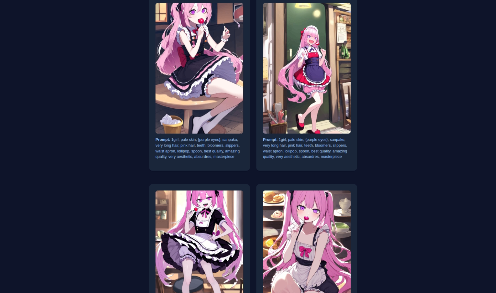
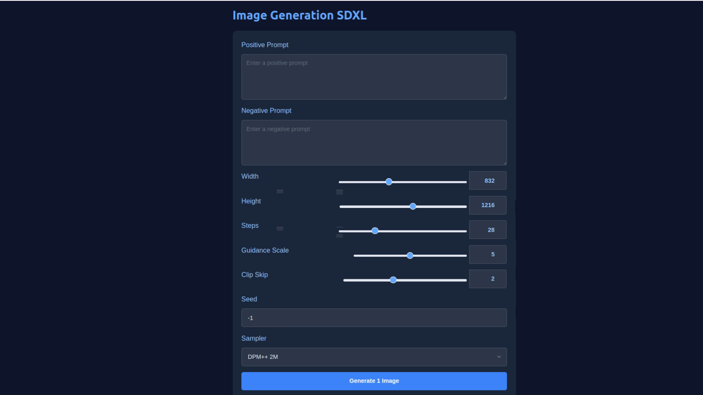

Building a Stable Diffusion Website with FastHTML
Posted on September 10, 2024
In this tutorial, we'll explore the process of building a website for Stable Diffusion using the FastHTML framework. We'll be using the SDXL-Web-Demo project as our foundation, which provides a powerful and user-friendly interface for Stable Diffusion XL (SDXL) inference.
User Interface for Generation
The user interface is built using FastHTML, which allows for rapid development of responsive web pages. Key components of the UI include:
- Text input for prompts
- Generate button for SDXL inference
- Display area for generated images
FastHTML's templating system is used to create dynamic pages that update based on user input and generated results.